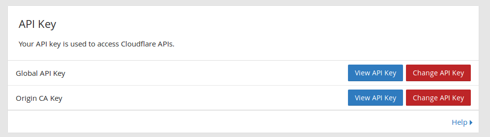

Dynamic DNS with ddclient and Cloudflare
written by Adrian Harabulă on 2018-01-04
From the Cloudflare side, add desired subdomain you want to map.

Put a dummy IP address (127.0.0.1), deactivate orange cloud and click Add Record.
Next, from My profile page get Global API Key.

On a machine with a dynamic public ip, install ddclient with:
sudo apt update
sudo apt install ddclient libjson-any-perl
Update /etc/default/ddclient:
Check for run_daemon="true" and update daemon_interval to preferred value, default is 300 seconds.
# Configuration for ddclient scripts
# generated from debconf on Fri 24 Nov 21:37:56 EET 2017
#
# /etc/default/ddclient
# Set to "true" if ddclient should be run every time DHCP client ('dhclient'
# from package isc-dhcp-client) updates the systems IP address.
run_dhclient="false"
# Set to "true" if ddclient should be run every time a new ppp connection is
# established. This might be useful, if you are using dial-on-demand.
run_ipup="false"
# Set to "true" if ddclient should run in daemon mode
# If this is changed to true, run_ipup and run_dhclient must be set to false.
run_daemon="true"
# Set the time interval between the updates of the dynamic DNS name in seconds.
# This option only takes effect if the ddclient runs in daemon mode.
daemon_interval="60"
Insert valid email, API Key and update the subdomains you want to update in /etc/ddclient.conf:
# Configuration file for ddclient generated by debconf
#
# /etc/ddclient.conf
##
### CloudFlare config
###
ssl=yes
use=web, web=dyndns
protocol=cloudflare,
server=www.cloudflare.com
login=INSERT_CLOUDFLARE_EMAIL
password=INSERT_CLOUDFLARE_API_TOKEN
# set domain and subdomain to update
zone=domain1.com
sub1.domain1.com
# OPTIONAL
# sub2.domain1.com
# OPTIONAL
# zone=domain2.com
# sub1.domain2.com
Test current config with:
sudo ddclient -daemon=0 -debug -verbose -noquiet
Restart ddclient service:
sudo service ddclient restart
Now ddclient is up and running as is checking for DNS updates every 60 seconds.
Check service status with:
sudo service ddclient start
These instructions have been tested on ubuntu 16.04 and raspberry pi with raspbian stretch.
Future work:
- pack the service as a docker container, run service from a single command.
For more in depth instructions read Dynamic DNS with ddclient on Raspberry Pi and Ubuntu.